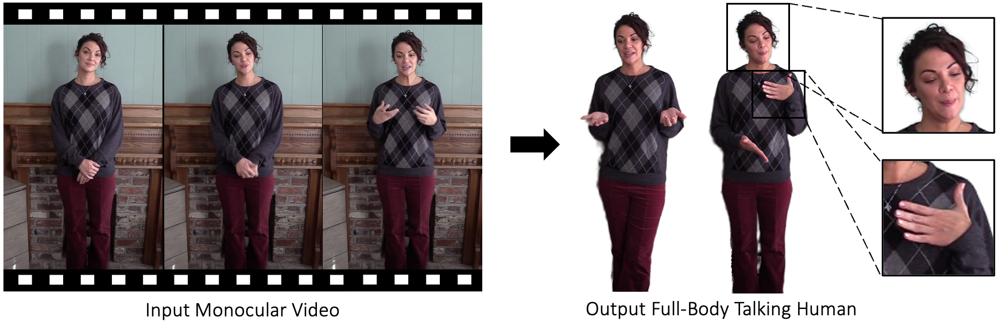

KinMo: Kinematic-aware Human Motion Understanding and Generation
IEEE International Conference on Computer Vision (ICCV), 2025
IEEE International Conference on Computer Vision (ICCV), 2025

ABAW at IEEE European Conference on Computer Vision (ECCVW), 2024

IEEE Conference on Computer Vision and Pattern Recognition (CVPR), 2021